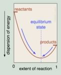
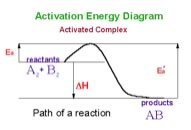

| Chapter 8.5: Back to Equilibrium |
|
8.1 How for, how fast? |
The equilibrium constant for any reaction, at a particularly temperature, is a constant. This means that you can add reactants or products, and as we will discuss in detail in later sections, the constant does not change - it is a constant (that said, you cannot change the temperature, that will change Keq. The implications of this are quite profound. For example, if you add or take away products or reactants from a reaction, it will shift so that it will reach equilibrium again - with the same value of Keq, and since we know (or can look up, or calculate) what the equilibrium constant is, we will be able to figure out exactly what the system will do to re-assert the equilibrium condition. We can generalize this relationship for a general reaction,
nA + mB ↔ oC + pD If we return to the reaction of acetic acid and water, AcOH
+ H2O ↔ H3O+ + AcO– |
| Using the data from this type of analysis we can calculate the equilibrium constant Keq = (1.3 x 10–3)2/0.1, which indicates that Keq for this reactions equals 1.8 x 10–5. Note that we do not use a large number of significant figures to calculate Keq since we are making approximations that would make a more “accurate” calculation less useful (and not actually justified). In addition note that Keq itself does not have units associated with it. |
Question to answer:
Questions to ponder:
|
Free Energies and equilibrium constants This is all well and good, and assuming that we can measure the concentrations of reactants and products at equilibrium, we can calculate the equilibrium constant, Keq, but is this simply an empirical measurement? It was certainly discovered empirically, and has been shown to be applicable to huge numbers of reactant systems, yet somehow it does not seem very satisfying to say “this is the way things are” without an explanation for why the equilibrium constant is constant. How does it relate to molecular structure? More simply what determines the equilibrium constant? What is the driving force that moves a reaction towards equilibrium, and then inhibits any further progress towards products? One way to think about this is that the position of equilibrium is where the maximum entropy change of the universe is found - that is, on either side of this position the entropy change is negative and therefore unlikely. If we plot the extent of the reaction versus the dispersion of energy (in the universe) or the free energy, we can see better what is meant by this. At equilibrium the system sits in at the bottom of an energy well. Any shift in the position of the reaction, forwards or backwards, will result in a decrease in entropy, or an increase in free energy. Remember, that even though at the macroscopic level the system seems to be at rest, at the molecular level the reactions is still occurring. At equilibrium the difference in free energy, ΔG, between the reactants and products is zero. |
| It bears repeating - the criterion for chemical equilibrium is that ΔG = 0 for the reactants products. This is also true for any phase change, for example at 100 ºC and 1 atmosphere pressure, the difference in free energy for H2O(g) and H2O(l) is zero. Since any system will naturally tend to this equilibrium condition, a system away from equilibrium can be harnessed to do work, that is to drive some other non-favorable reaction or system away from equilibrium, while a system at equilibrium cannot do work - as we will see in greater detail shortly. |  |
| The relationship between the standard free energy change
and the equilibrium constant is given by the equation ΔGº = – RT ln K, (which can be converted into the equation ln Keq = – ΔGº/RT o rKeq = e –ΔGº/RT). As we saw earlier the superscript º refers to thermodynamic quantities that are measured and calculated at standard states. In this case ΔGº refers to 1 atmosphere pressure and 298K, and critical for our present discussion, 1 M concentrations for both reactants and products. That is: ΔGº tells you about the free energy change if all the substances in the reacting system were mixed with initial concentrations of 1.0 M. It allows us to calculate equilibrium constants from tables of free energy values (see chapter 9.) This is a rather artificial situation and you might be tempted to think that ΔGº is not very useful in the real world where initial concentrations of both reactants and products are rarely 1.0 M. But no, ΔGº does tell us something useful, namely which way a reaction will proceed under these starting conditions. Under a specific set of condition we can use ΔGº to calculate the actual free energy change ΔG; where ΔG = ΔGº +RT ln Q. In this equation Q (the reaction quotient) is of the same form as Keq (that is [products]/[reactants], except that the concentrations are not = 1M, but rather are the actual concentrations at the starting point. The sign and magnitude of ΔG
then will tell us which way the reaction will proceed and how far
in that direction it will go. Note that Keq and ΔGº are constant for a given reaction at a given temperature, but Q and ΔG are not - their values vary according to the reaction conditions. In fact, using Q and/or ΔG we can predict how a system will behave under the specific conditions we care about,as it moves towards the highest entropy state (or the lowest value of ΔG). |
Question to answer:
Questions to ponder:
|
Equilibrium and non-equilibrium states Let us look at a chemical system macroscopically. If
that system begins to change once mixed up (that is the reaction occurs
spontaneously), we can define the equilibrium state by the fact that
there are no longer changes in the concentrations of reactants and
products. We might actually think (not unreasonably) that the system
is static, and assume (perhaps) that the molecules in the system are
stable and no longer changing. But a little reflection might lead us
to question this assumption. What has changed at the molecular level?
In the case of our acetic acid example, there are still molecules of
acetic acid, (AcOH) acetate (AcO-) and hydronium ion (H3O+)
colliding with solvent water molecules and each other. Some of these
reactions will have enough energy to be productive; molecules of acetate
will transfer protons to water molecules and the reverse reaction will
also occur. What has changed is that the rate of acetate (AcO-) and
hydronium ion (H3O+) formation will be equal and opposite to the rate
of acetic acid deprotonation (transfer of the proton to water). While
there will be no net change at the macroscopic level, at the molecular
level, things are happening. Bonds are breaking and forming - this
is the dynamic equilibrium we discussed earlier. At
equilibrium the acetic acid-water system contains acetic acid (AcOH),
protons (H3O+), and acetate ion (AcO–). We know that
a 0.10 M solution of acetic acid has concentrations of [H3O+]
= [AcO–] = 1.3 x 10–3 M. So what happens if
we add enough acetate to make the acetate concentration 0.10 M? One
way is to think about the new situation is to consider the probability
of the forward and the back reactions. Since we added more product
(acetate) the rate of the back reaction must increase (since there
are more acetate ions around to collide with.) In this new state ΔG will be negative.
But just as we saw previously, as soon as more acetic acid is formed,
the probability of the forward reaction increases and a new equilibrium
position will be established, where the rate of the forward reactions
will equal the rate of the back reaction. This generates a value for Q as 1.3 x 10–3.
Now if we compare Q and Keq we see that Q is larger than Keq (1.3 x
10–3 > 1.8 x 10–5). To re-establish
equilibrium the system will have to shift so that Q becomes smaller,
that is equal to Keq (at which point ΔG = 0.) To do this the
numerator [products] must decrease, while the denominator [reactants]
increases. That is: the reaction must go backwards, to re-establish
an equilibrium state. Just as we argued earlier from probability considerations. Le Chatelier’s Principle It is important to remember that Le Chatelier’s principle is only a heuristic, it doesn’t tell us why the system shifts to the left. To answer this question let us consider the energy profile for an exothermic reaction. |
We can see that the activation energy (E’a) for the reverse reaction is larger than that for the forward reaction (Ea). Another way to say this is that more energy is required for molecules to react for the reverse reaction to occur than for the forward reaction. Therefore it makes sense that if you supply more energy the reverse reaction will be affected more than the forward reaction. |
 |
Now here is an interesting point, imagine a situation in which reactants and products are continually being added to and removed from a system. Such systems are described as “open”, meaning that matter (and energy) are entering or leaving them; open systems are never at equilibrium. Assuming that the changes to the system occur on a time scale that is faster than the rate the system returns to equilibrium following such a perturbation, the system could well be stable and such stable, non-equilibrium systems are referred as “steady state” systems (living organisms are steady state systems). An analogy might be a cup with a hole in it being filled from a tap, if the rate at which water flows into the cup is equal to the rate at which it flows out, the level of water in the cup would stay the same, but the water in it would constantly be added to and leaving the system (the cup). Biological systems are open systems, with energy and matter entering and leaving, while most equilibrium systems studied in chemistry (at least those discussed in introductory texts) are closed.
in which cesium catalyzes
the oxidation and bromination of malonic acid (CH2(COOH)2)
by BrO3– in H2SO4. If the system
is not being actively stirred, this reaction can produces quite complex
and dynamic spatial patterns. While the typical BZ reaction involves
a closed system, it will eventually reach a boring (macroscopically static)
equilibrium state. The open nature of biological systems means that complex
behaviors do not have to stop, they continue over very long periods of
time. Together the Cell Theory of Life (that is, that all cells are derived
from preexisting cells and that all organisms are built from cells or
their products) and the fossil record indicate that the non-equilibrium
system of coupled chemical reactions we call life has persisted, uninterrupted,
for at least ~3.5 billion years (now that is a hard to accept idea, for
something as fragile as life). |
| The steady state systems found in organisms display two extremely important properties, they are adaptive and homeostatic. That means that they can change in response to various stimuli (adaptation) and they tend to return their original state following a perturbation (homeostasis). Both are distinct from Le Chatelier’s principle in that they are not passive, but active - that is energy requiring processes. While adaptation and homeostasis may seem contradictory, in fact they work together to keep living things alive and enable them to adapt to changing conditions. One of the reasons that organisms, even the simplest, are so complex is because of the interconnected and evolved nature of their adaptive and homeostatic systems. | 8.1
How for, how fast? |
Question to answer:
|
| 28-Jun-2012 |